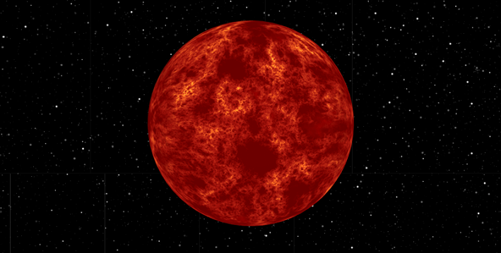
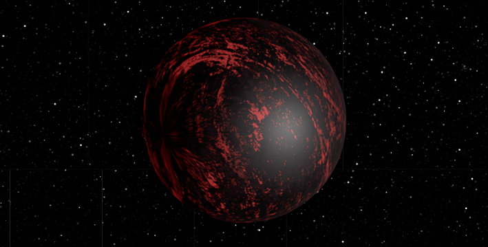
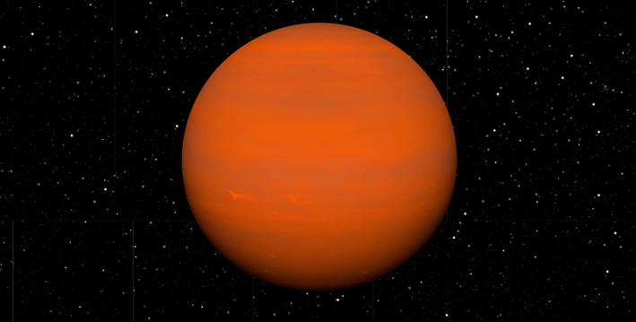
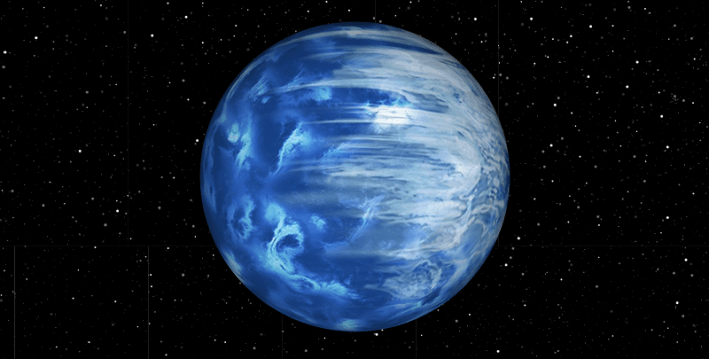
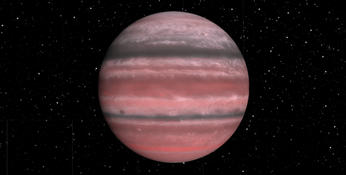
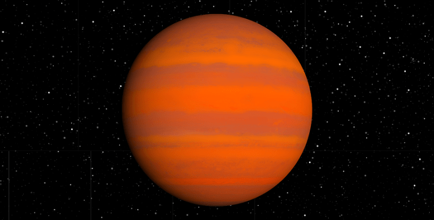

Among the many joys of traveling, escaping the norm is a top draw. On Earth, that’s a little harder than you might think. Our planet’s various climates may seem distinct, but they are mundane compared to what else is out there. We must go farther afield—and I mean really farther—to experience something truly strange.
With science as our guide, let’s visit alien worlds with some of the most extreme, terrifying, beautiful, and bizarre climates in the known universe. Our itinerary includes seven stops. We begin in our solar system.
First stop: Neptune

Image of Neptune. Credit: NASA/JPL-Caltech.
On Neptune, we hope you can withstand freezing temperatures and bone-crushing pressure. Prepare for pale turquoise skies, some clouds, and a chance of diamond rain.
Neptune’s upper atmosphere is a chilling -396 degrees Fahrenheit. As you descend toward the surface, you’ll encounter clouds of methane and other hydrocarbons, which liquify the farther you go. As the light fades, the pressure and the heat build. When the temperature reaches that of Earth, the methane might start to fall apart, its carbon atoms reforming as diamonds, which would fall toward the planet’s core. Oh, and then there’s the wind.
Neptune’s winds are the strongest in the solar system—over 1,200 miles per hour, far beyond the speed of sound. Why is a mystery. On other planets with such supersonic winds, their star’s energy drives the gale, but Neptune is too far from the sun for this explanation. Such intense winds can whip up terrible storms, yet unlike Jupiter’s Great Red Spot, a hundreds-of-years-old anticyclone that features winds up to 400 miles per hour, Neptune’s storms don’t seem to last so interminably, so at least there’s that.
Second stop: 55 Cancri e

Image of 55 Cancri e. Credit: NASA/JPL-Caltech.
For our next stop, we’re bringing the heat. If you’ve ever wanted to visit an active volcano, 55 Cancri e is for you. At least half of its surface is lava. A lack of somewhere to stand, however, is a trifling inconvenience compared to the certainty of being vaporized.
Located some 41 light-years away, 55 Cancri e is very close to its star—a year lasts less than two Earth days—and tidally locked, much like our moon: Trapped in sunlight, the dayside is about 3,500 degrees Fahrenheit, or “hot enough to melt all types of known rock,” explained Michael Zhang, a postdoctoral fellow at the University of Chicago. The lava is so hot that it would not appear red, as we might imagine on Earth, but would instead glow bright, pale yellow.
You’re probably still going to have a lava ocean.
55 Cancri e is too near its star to have sustained whatever atmosphere it had when it first formed. But somehow, it has one—55 Cancri e would likely be hotter if it didn’t have something, Zhang said. This secondary atmosphere is thought to be composed of carbon monoxide and carbon dioxide, created by gases arising from the lava ocean in a constant cycle of creation and annihilation. Shiny clouds, likely made of silicates, could also reflect away some of the star’s heat.
The nightside offers little relief: It is far hotter than Earth, at about 2,509 degrees Fahrenheit. Most rock melts between 1,100 and 2,500 degrees Fahrenheit, so you’re probably still going to have a lava ocean—albeit a cooler one, with an orange tinge. The day-to-night difference is great enough that some of those clouds might even condense. The nightside is also dark, so you’re less likely to spot any reformed rocks that might fall on you from those clouds, like being pelted with gravel.
Third stop: TrES-2 b

Image of TrES-2 b. Credit: NASA/JPL-Caltech.
Our third destination is one for the goths: TrES-2 b holds the honor of being the darkest exoplanet ever found orbiting a star.
This gas giant absorbs almost all the light that hits it, reflecting barely anything back into space. For comparison’s sake, coal—the least reflective naturally occurring material on Earth—absorbs 95 percent of light. TrES-2 b absorbs 99.9 percent, making it darker than black acrylic paint, but not quite as absorbent as more exotic substances, like Vantablack.
Scientists don’t know why this world is so dark, but they do know that TrES-2 b is very, very hot—on its dayside, the temperatures reach around 3,140 degrees Fahrenheit. In fact, the only light scientists have observed coming from the planet seems to be entirely thermal emission. “If you’re in a spaceship flying by, it wouldn’t be invisible, even though it’s the darkest world,” said David Kipping, an astronomer at Columbia University. “It’s just glowing like an iron being pulled out of the fire.”
How bright is it? Well, if TrES-2 b were in our solar system, then it would be thousands of times brighter than Venus. That’s partially because TrES-2 b is huge compared to our shiniest neighbor, with a mass of about 1.5 Jupiters.
Cross over to the night side, however, and the temperature drops significantly. Out of the star’s glare, it’s cool enough that much of the heat radiating from the planet would no longer be visible, but a deep crimson glow may remain. There might even be clouds, although what kind is a mystery.
Fourth stop: KELT-9 b

Image of KELT-9 b. Credit: NASA/JPL-Caltech.
At this point, you thought you knew hot. But you didn’t know KELT-9 b. A super-Jupiter, the planet is tidally locked to its star and has the odd distinction of orbiting perpendicularly.
On its dayside, the planet clocks in at about 7,800 degrees Fahrenheit, almost as hot as the surface of our sun, and hotter than many other stars found in our galaxy. And because it is so close to its host, it is bathed in radiation. If you have ever wondered what it feels like to be on a star, then KELT-9 b is your opportunity.
The planet appears to be tearing itself apart.
Unfortunately, you won’t feel anything for long, because KELT-9 b is so hot that scientists believe molecules there are being ripped apart into their constituent atoms. At least some of the dayside’s heat is transferred to the nightside, so there must be some wind, which likely pushes those atoms over, too. There they might reform, temporarily becoming molecules once more … only to be torn up again.
In fact, the planet appears to be tearing itself apart. Scientists believe that as KELT-9 b zooms around its star—its orbit lasts about 2 and a half Earth-days—it’s disintegrating, evaporating so fast that it might even have a tail of vaporized matter, like a comet. According to one estimate, its atmosphere loses the equivalent of 18 to 68 Earths in mass every billion years, so be sure to visit before it is gone.
Fifth stop: HD 189733 b

Image of HD 189733 B. Credit: NASA/JPL-Caltech.
From a distance, HD 189733 b could be mistaken for our own planet. As you approach, it would appear uncannily like Voyager’s famous “Pale Blue Dot” image of Earth—a cobalt-colored ball, suspended in the void.
A gassy planet a bit bigger than Jupiter, HD 189733 b is blue, hot, and extremely windy. Its winds howl at up to 5,400 miles an hour, seven times the speed of sound and far beyond anything in our solar system.
Indeed, this world’s violent storms, diminishing atmosphere, and turbulent winds make it among the most hostile to life (as we know it) worlds that we have ever discovered.
If you’re caught in this maelstrom, you’ll experience what NASA has called a “death by a thousand cuts.” That’s because it rains molten glass, sideways. Silicates in the atmosphere on the dayside will be blown by the winds to the nightside, a transition that comes with a 500- degrees-Fahrenheit temperature drop, enough for them to condense into small droplets that, because of the wind, wouldn’t so much fall as fling. You might compare the experience to standing inside a world-sized blowtorch, wind tunnel, and sandblaster all at the same time.
To make matters worse, HD 189733 b appears to have hydrogen sulfide in its atmosphere, which means it would reek: On Earth, this colorless gas causes the rotten egg smell that you may have had the misfortune to sniff while walking by an open sewer.
Sixth stop: GJ 9827 d

Image of GJ 9827 d. Credit: NASA/JPL-Caltech.
By now, you’re likely craving a bath, if for no reason other than to scrub away the stench of a Jupiter-sized landfill. GJ 9827 d can do you one better: Perhaps among the most bizarre planets yet discovered, this world is composed almost entirely of water.
Water vapor, to be exact. The planet is estimated to be about 450 degrees Fahrenheit, or around the same temperature as the surface of Venus, and has a possible rocky interior enveloped in a thick, watery atmosphere. This complex, heavy atmospheric makeup is similar to rocky planets in our solar system.
It’s a tantalizing idea: Water is a key ingredient for life. Yet this so-called “steam world” is believed to be too warm to be hospitable to life as we know it. But what about that which we don’t know? GJ 9827 d’s very existence suggests there may be other water-laden worlds, opening a new avenue for astrobiologists in search of extraterrestrial life.
Final destination: WASP-76 b

Image WASP-76 b. Credit: NASA/JPL-Caltech.
We end this tour in a blaze of glory.
Very similar in mass to Jupiter, gas giant WASP-76 b is another world that exists very close to its star, meaning it, too, is incredibly hot.
Hot enough to vaporize lead and iron on its dayside, which always faces its star. WASP-76 b’s blasting winds likely whip that metal vapor round onto its nightside, where they might condense and fall as iron rain.
What it lacks in hospitableness, the planet may make up for in beauty. Astronomers believe WASP-76 b’s atmosphere may produce a “glory” effect, which is essentially a trick of the light that looks something akin to a Medieval saint’s halo made of rainbows.
Although it appears almost like a circular rainbow, a glory is very much its own thing and requires very distinct and rare conditions to arise. Atmospheric particles must be spherical, uniform, and form stable clouds that last for a long period of time. WASP-76 b’s star needs to shine directly at this patch of atmosphere, and for us to see it, our instruments would also need to be looking in just the right place, at just the right time.